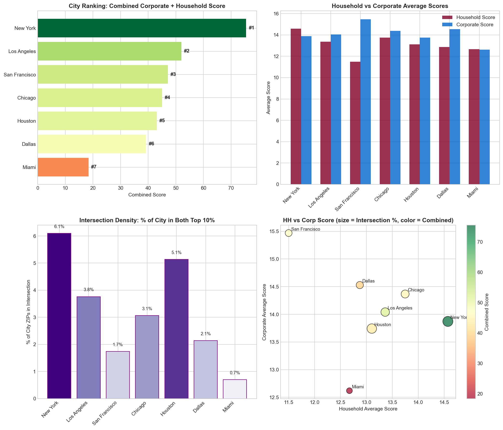
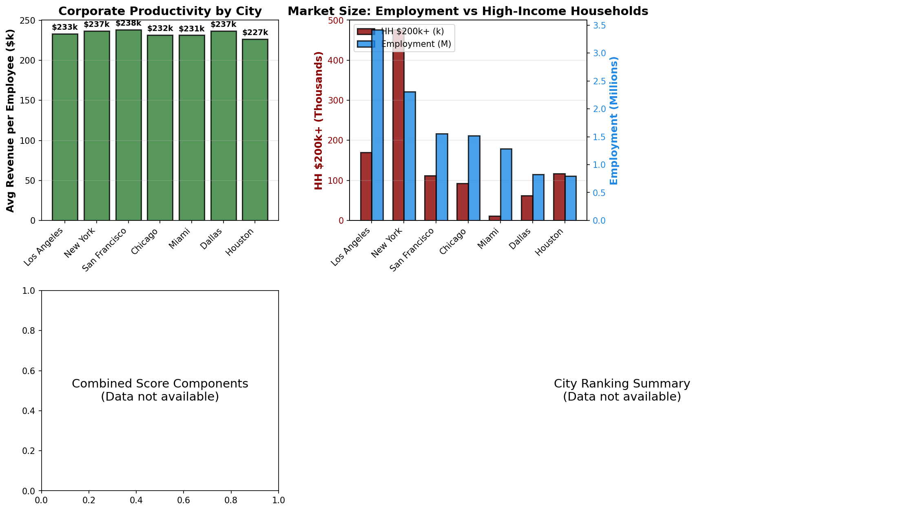
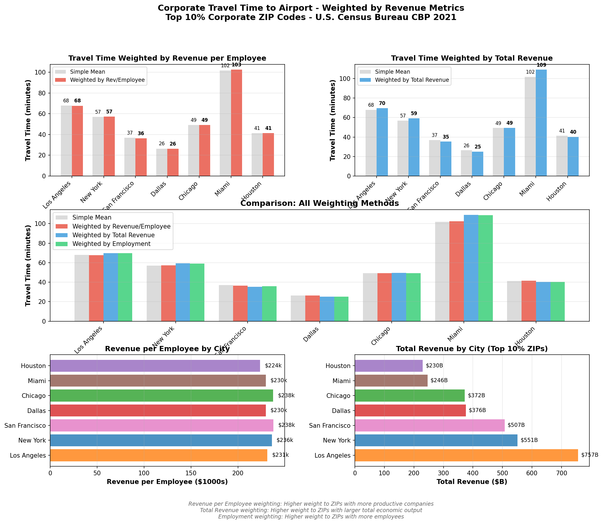
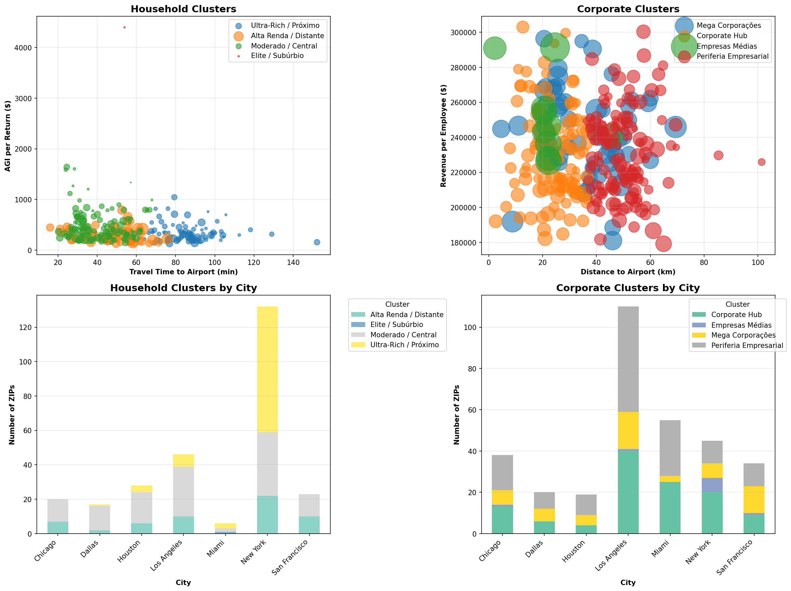

🏠💼 GeoEco Dashboard
Análise Integrada: Households & Corporate Power
📊 Visão Geral - Análise Integrada
Households: IRS SOI 2022, Census ACS 2022
Corporate: U.S. Census Bureau - County Business Patterns 2021
Cobertura Geográfica: 7 Áreas Metropolitanas Principais
Análise: Top 10% em Riqueza (Households) e Poder Corporativo
🏆 Ranking Final por Cidade
Fórmula Integrada: HH Quality 25% + HH Volume 15% + Corp Quality 25% + Corp Volume 15% + Intersection 10% + Infrastructure 10%


🏠 Análise de Households (Top 10% Mais Ricos)
Critério: Geometric Score ≥ 90º percentil
Total: 272 ZIP codes nos 7 metros
Distribuições


Distância vs Tempo de Viagem
Nota: Dados limpos excluindo velocidades impossíveis (> 120 km/h) ou tempos ausentes.


🏢 Análise Corporate (Top 10% Poder Corporativo)
Dados Diretos: Establishments, Employment, Payroll (100% reais)
Estimativas: Revenue estimado usando ratios BLS revenue-per-employee
Distribuições


Revenue & Employment


Tempo de Viagem Ponderado por Revenue
Insight: Estes gráficos mostram como o tempo de viagem corporativo ao aeroporto é ponderado por significância econômica. Maior ponderação por revenue/employee enfatiza empresas mais produtivas, enquanto ponderação por revenue total enfatiza cidades com maior output econômico total.


Análise Comparativa

🎯 Intersection: Onde Riqueza Encontra Poder Corporativo
Total: 197 ZIP codes
Overlap: 72.4% dos household top 10% também são corporate top 10%
Correlação: 0.261 (positiva mas moderada)
Análise Estratégica: LA & NYC
🔍 Análise de Clusters
Features Households: HH $200k+, AGI per Return, Travel Time
Features Corporate: Employment, Revenue, Distance to Airport
Objetivo: Identificar padrões geográficos e econômicos
Visualização de Clusters

Household Clusters
| Cluster | ZIPs | Características | Cidades Principais |
|---|---|---|---|
| Ultra-Rich / Próximo | Variável | Alto AGI, próximo ao aeroporto, densidade moderada | Los Angeles, New York |
| Alta Renda / Distante | Variável | Alto volume de HH200k+, mais distante do aeroporto | New York, Los Angeles, San Francisco |
| Moderado / Central | Maior grupo | Riqueza moderada, localização central | New York, Los Angeles, Houston |
| Elite / Subúrbio | Menor grupo | AGI muito alto, áreas exclusivas | Miami |
Corporate Clusters
| Cluster | ZIPs | Características | Cidades Principais |
|---|---|---|---|
| Mega Corporações | ~10 ZIPs | Employment > 100k, Revenue > $30B | New York, Chicago, Los Angeles |
| Corporate Hub | ~60 ZIPs | Alto employment, próximo ao aeroporto | Los Angeles, San Francisco, New York |
| Empresas Médias | ~120 ZIPs | Employment moderado, bem distribuído | Los Angeles, Miami, New York |
| Periferia Empresarial | ~135 ZIPs | Mais distante, empresas menores | Los Angeles, Miami, Chicago |
🗺️ Mapas Interativos
Mapas Nacionais
🏠 Household National 🏢 Corporate National 🎯 Intersection National
Mapas por Cidade - Households
Los Angeles New York Chicago Dallas Houston Miami San Francisco
Mapas por Cidade - Corporate
Los Angeles New York Chicago Dallas Houston Miami San Francisco
Mapas Overlay (Intersection)
Los Angeles New York Chicago Dallas Houston Miami San Francisco
📥 Downloads de Dados
Household Data
📊 Top 10% Household Data (CSV) 📏 Distance Analysis ⚖️ Weighted Averages 🏠 HH by Region 🔍 Household Clusters
Corporate Data
📊 All Corporate ZIPs (CSV) ⭐ Top 10% Corporate ZIPs (CSV) ⚖️ Weighted Averages ✈️ Travel Time by Revenue 🏭 Power Industries 🔍 Corporate Clusters
Intersection Data
Data Sources: IRS SOI 2022, Census Bureau CBP 2021, Census ACS 2022, Google Distance Matrix API
Last Updated: December 2025 | 7 Major Metro Areas | Top 10% Analysis